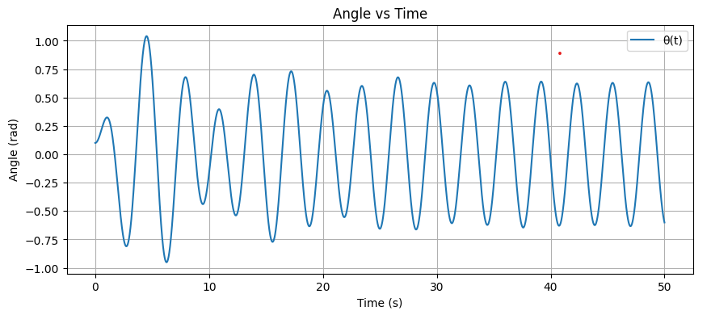
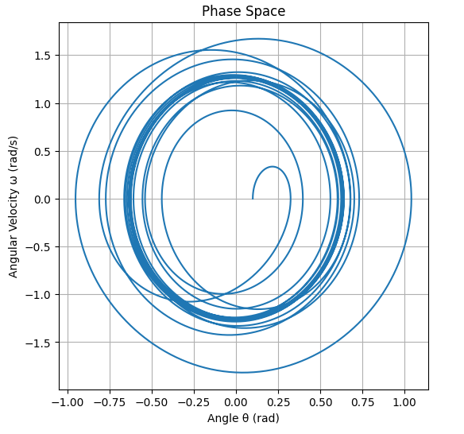
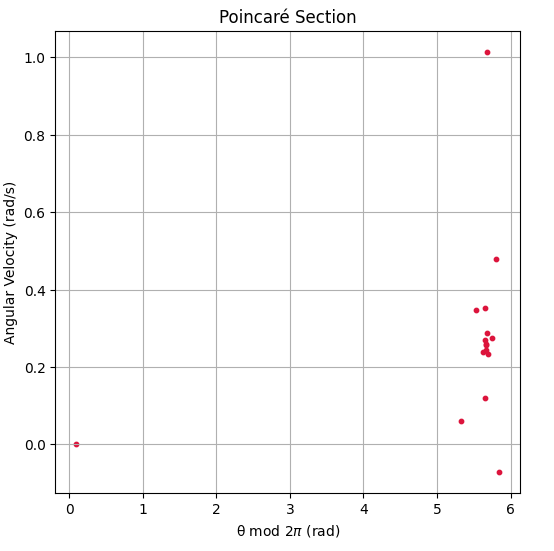
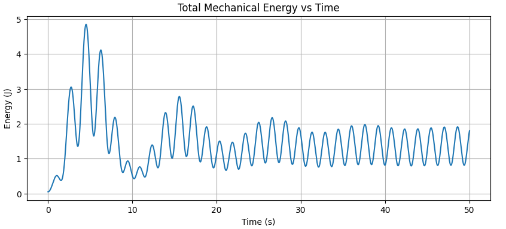
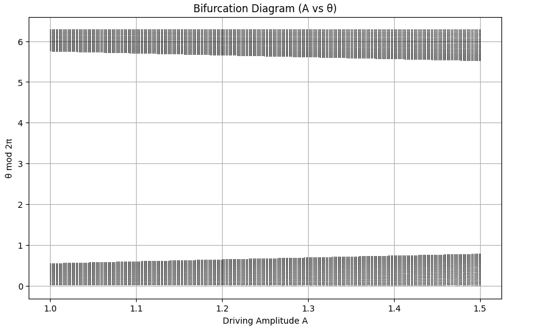
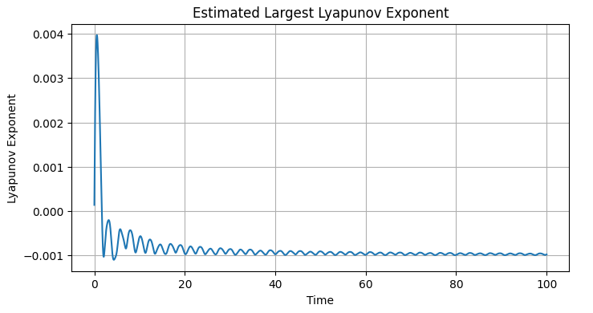
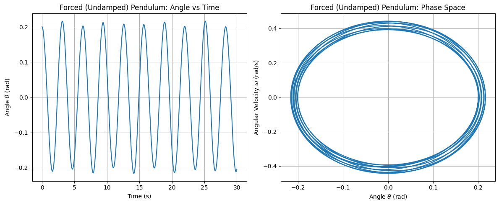
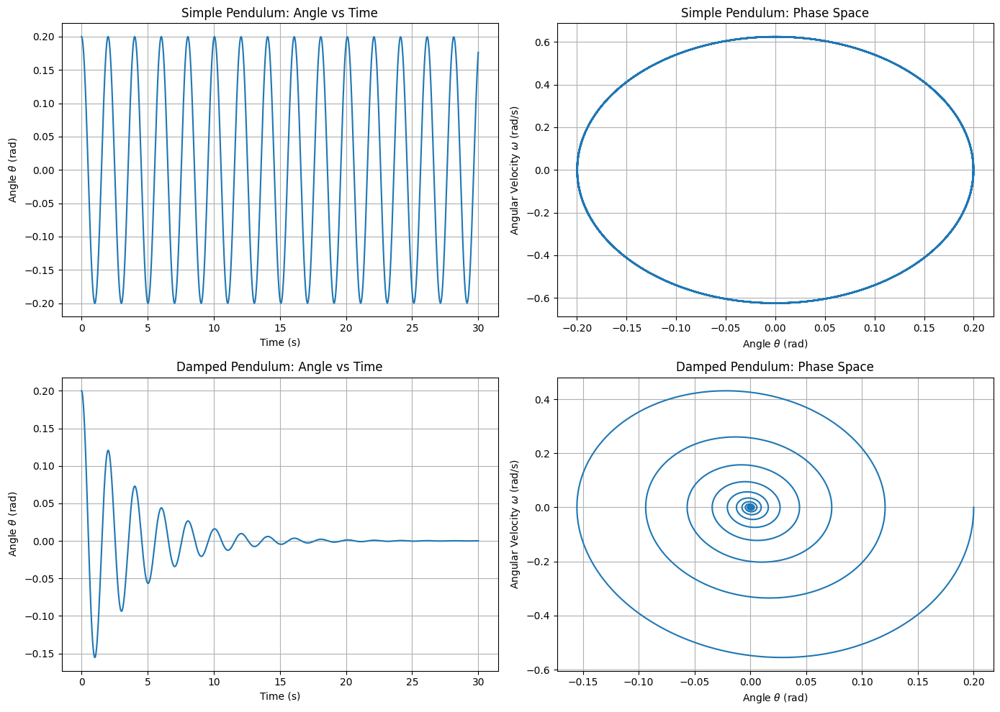

Investigating the Dynamics of a Forced Damped Pendulum
Motivation
The forced damped pendulum is a classic example of nonlinear dynamics. Unlike simple harmonic oscillators, this system responds to periodic external forces and damping, producing rich behavior that includes resonance, synchronization, and even chaos. This kind of system is fundamental in physics and engineering because it mirrors the behavior of real-world systems like suspension bridges, circuits, and mechanical vibration absorbers.
1. Theoretical Foundation
The general nonlinear equation for the forced damped pendulum is:
Where: - \(\theta\): angular displacement (radians) - \(\gamma\): damping coefficient (how quickly oscillations die out) - \(\omega_0\): natural angular frequency (\(\omega_0 = \sqrt{g / L}\) for a pendulum of length \(L\)) - \(A\): amplitude of external force - \(\omega\): driving frequency
Small-Angle Approximation
When \(\theta\) is small (typically less than 10°), we can use the approximation:
This simplifies the equation to:
This form is a linear second-order ODE, easier to solve and useful for studying resonance behavior.
2. Python Simulation
Let's simulate the pendulum using numerical methods. We'll use the Runge-Kutta method via scipy.integrate.solve_ivp.
import numpy as np
import matplotlib.pyplot as plt
from scipy.integrate import solve_ivp
# Differential equation
def pendulum(t, y, gamma, omega0, A, omega):
theta, omega_theta = y
dydt = [omega_theta, -gamma * omega_theta - omega0**2 * np.sin(theta) + A * np.cos(omega * t)]
return dydt
# Parameters
gamma = 0.2
omega0 = 1.5
A = 1.2
omega_drive = 2.0
y0 = [0.1, 0.0]
t_span = (0, 50)
t_eval = np.linspace(*t_span, 5000)
# Solve the system
sol = solve_ivp(pendulum, t_span, y0, t_eval=t_eval, args=(gamma, omega0, A, omega_drive))
# Plot angle over time
plt.figure(figsize=(10, 4))
plt.plot(sol.t, sol.y[0], label='θ(t)')
plt.title('Angle vs Time')
plt.xlabel('Time (s)')
plt.ylabel('Angle (rad)')
plt.grid(True)
plt.legend()
plt.show()

3. Phase Space (θ vs ω)
This plot helps visualize how the system evolves in state space.
plt.figure(figsize=(6, 6))
plt.plot(sol.y[0], sol.y[1])
plt.title('Phase Space')
plt.xlabel('Angle θ (rad)')
plt.ylabel('Angular Velocity ω (rad/s)')
plt.grid(True)
plt.show()

4. Poincaré Section
The Poincaré section samples the system once per driving cycle, helping identify periodicity and chaos.
T = 2 * np.pi / omega_drive
poincare_times = np.arange(0, t_span[1], T)
poincare_points = []
for t_p in poincare_times:
idx = np.argmin(np.abs(sol.t - t_p))
poincare_points.append([sol.y[0][idx] % (2*np.pi), sol.y[1][idx]])
poincare_points = np.array(poincare_points)
plt.figure(figsize=(6, 6))
plt.scatter(poincare_points[:, 0], poincare_points[:, 1], s=10, color='crimson')
plt.title('Poincaré Section')
plt.xlabel('θ mod $2\pi$ (rad)')
plt.ylabel('Angular Velocity (rad/s)')
plt.grid(True)
plt.show()

5. Additional Visualization: Energy Over Time
Visualizing total mechanical energy shows how damping and driving force interact.
mass = 1.0
length = 1.0
g = 9.81
theta = sol.y[0]
omega = sol.y[1]
potential_energy = mass * g * length * (1 - np.cos(theta))
kinetic_energy = 0.5 * mass * (length**2) * omega**2
total_energy = potential_energy + kinetic_energy
plt.figure(figsize=(10, 4))
plt.plot(sol.t, total_energy)
plt.title('Total Mechanical Energy vs Time')
plt.xlabel('Time (s)')
plt.ylabel('Energy (J)')
plt.grid(True)
plt.show()

6. Bifurcation Diagram
Explore how the long-term behavior changes with the driving amplitude A.
bifurcation_A = np.linspace(1.0, 1.5, 300)
steady_states = []
for A_val in bifurcation_A:
sol = solve_ivp(pendulum, [0, 200], [0.1, 0.0], t_eval=np.linspace(150, 200, 500), args=(gamma, omega0, A_val, omega_drive))
theta_vals = sol.y[0] % (2 * np.pi)
steady_states.append((np.full_like(theta_vals, A_val), theta_vals))
plt.figure(figsize=(10, 6))
for A_vals, thetas in steady_states:
plt.plot(A_vals, thetas, ',k', alpha=0.5)
plt.title("Bifurcation Diagram (A vs θ)")
plt.xlabel("Driving Amplitude A")
plt.ylabel("θ mod 2π")
plt.grid(True)
plt.show()

7. Lyapunov Exponent Estimation
Estimate the largest Lyapunov exponent to determine chaos.
def estimate_lyapunov(delta0=1e-8, T_max=100):
y1 = np.array([0.1, 0.0])
y2 = y1 + np.array([delta0, 0])
times = np.linspace(0, T_max, 10000)
d_list = []
for t in range(len(times) - 1):
sol1 = solve_ivp(pendulum, [times[t], times[t+1]], y1, t_eval=[times[t+1]], args=(gamma, omega0, A, omega_drive))
sol2 = solve_ivp(pendulum, [times[t], times[t+1]], y2, t_eval=[times[t+1]], args=(gamma, omega0, A, omega_drive))
y1 = sol1.y[:, -1]
y2 = sol2.y[:, -1]
delta = np.linalg.norm(y2 - y1)
d_list.append(np.log(delta / delta0))
y2 = y1 + delta0 * (y2 - y1) / delta # Renormalize
return times[1:], np.cumsum(d_list) / np.arange(1, len(d_list)+1)
ltimes, lyap = estimate_lyapunov()
plt.figure(figsize=(8, 4))
plt.plot(ltimes, lyap)
plt.title("Estimated Largest Lyapunov Exponent")
plt.xlabel("Time")
plt.ylabel("Lyapunov Exponent")
plt.grid(True)
plt.show()

8. Exploring Parameters
Experimenting with parameters leads to different behaviors:
- Increasing A may cause chaotic motion.
- Lowering γ shows less damping, leading to longer sustained oscillations.
- Matching ω with ω₀ creates resonance, producing large amplitudes.
🔄 Extended Visualization: Adding Forced but Undamped Pendulum
This scenario demonstrates periodic motion with sustained energy input and no damping, resulting in regular oscillations without energy loss — a resonance-friendly setup.
We now add the fourth scenario that was previously missing:
| Case | Damping (\(b\)) | Forcing (\(A\)) |
|---|---|---|
| Simple Pendulum | 0 | 0 |
| Damped Pendulum | 0.5 | 0 |
| Forced Damped Pendulum | 0.5 | 1.2 |
| Forced (Undamped) Pendulum | 0 | 1.2 ✅ NEW |
This configuration shows how the system behaves when it's driven but has no energy loss – a potentially resonant and unstable regime.
import numpy as np
import matplotlib.pyplot as plt
from scipy.integrate import solve_ivp
g = 9.81
L = 1.0
omega0 = np.sqrt(g / L)
theta0 = 0.2
omega_init = 0.0
t_span = (0, 30)
t_eval = np.linspace(*t_span, 5000)
def pendulum_system(t, y, gamma, A, omega_drive):
theta, omega = y
dtheta_dt = omega
domega_dt = -gamma * omega - omega0**2 * np.sin(theta) + A * np.cos(omega_drive * t)
return [dtheta_dt, domega_dt]
gamma_forced_undamped = 0.0
A_forced = 1.2
omega_drive = 2.0
sol_forced_undamped = solve_ivp(pendulum_system, t_span, [theta0, omega_init],
t_eval=t_eval, args=(gamma_forced_undamped, A_forced, omega_drive))
plt.figure(figsize=(12, 5))
plt.subplot(1, 2, 1)
plt.plot(sol_forced_undamped.t, sol_forced_undamped.y[0])
plt.title("Forced (Undamped) Pendulum: Angle vs Time")
plt.xlabel("Time (s)")
plt.ylabel("Angle $\\theta$ (rad)")
plt.grid(True)
plt.subplot(1, 2, 2)
plt.plot(sol_forced_undamped.y[0], sol_forced_undamped.y[1])
plt.title("Forced (Undamped) Pendulum: Phase Space")
plt.xlabel("Angle $\\theta$ (rad)")
plt.ylabel("Angular Velocity $\\omega$ (rad/s)")
plt.grid(True)
plt.tight_layout()
plt.show()

9. Real-World Applications
- Energy Harvesters: Pendulums can convert motion into usable energy.
- Bridge Engineering: Avoiding resonance in suspension bridges is crucial.
- Washing Machines: Proper damping reduces imbalance.
- Electronics: RLC circuits have similar equations.
- Clocks: Pendulum clocks are based on resonance principles.
10. Model Limitations and Extensions
- The model assumes ideal sine driving forces.
- Real-world damping is often nonlinear.
- It doesn't account for multi-dimensional motion.
Possible Extensions
- Add random or non-periodic forcing.
- Add nonlinear damping (quadratic drag).
- Study bifurcation diagrams over varying A or ω.
- Simulate coupled or double pendulums.
To fully illustrate the transition from simple to complex dynamics, we add simulations for:
- Simple Pendulum (no damping, no forcing)
- Damped Pendulum (with damping, no forcing)
- Forced Damped Pendulum (already shown above)
We simulate and visualize angle-time plots and phase diagrams for the first two to complete the progression.
import numpy as np
import matplotlib.pyplot as plt
from scipy.integrate import solve_ivp
g = 9.81
L = 1.0
omega0 = np.sqrt(g / L)
theta0 = 0.2
omega_init = 0.0
t_span = (0, 30)
t_eval = np.linspace(*t_span, 5000)
def pendulum_system(t, y, gamma, A, omega_drive):
theta, omega = y
dtheta_dt = omega
domega_dt = -gamma * omega - omega0**2 * np.sin(theta) + A * np.cos(omega_drive * t)
return [dtheta_dt, domega_dt]
sol_simple = solve_ivp(pendulum_system, t_span, [theta0, omega_init],
t_eval=t_eval, args=(0.0, 0.0, 0.0))
sol_damped = solve_ivp(pendulum_system, t_span, [theta0, omega_init],
t_eval=t_eval, args=(0.5, 0.0, 0.0))
plt.figure(figsize=(14, 10))
plt.subplot(2, 2, 1)
plt.plot(sol_simple.t, sol_simple.y[0])
plt.title("Simple Pendulum: Angle vs Time")
plt.xlabel("Time (s)")
plt.ylabel("Angle $\\theta$ (rad)")
plt.grid(True)
plt.subplot(2, 2, 2)
plt.plot(sol_simple.y[0], sol_simple.y[1])
plt.title("Simple Pendulum: Phase Space")
plt.xlabel("Angle $\\theta$ (rad)")
plt.ylabel("Angular Velocity $\\omega$ (rad/s)")
plt.grid(True)
plt.subplot(2, 2, 3)
plt.plot(sol_damped.t, sol_damped.y[0])
plt.title("Damped Pendulum: Angle vs Time")
plt.xlabel("Time (s)")
plt.ylabel("Angle $\\theta$ (rad)")
plt.grid(True)
plt.subplot(2, 2, 4)
plt.plot(sol_damped.y[0], sol_damped.y[1])
plt.title("Damped Pendulum: Phase Space")
plt.xlabel("Angle $\\theta$ (rad)")
plt.ylabel("Angular Velocity $\\omega$ (rad/s)")
plt.grid(True)
plt.tight_layout()
plt.show()
